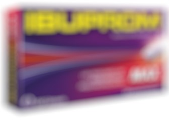
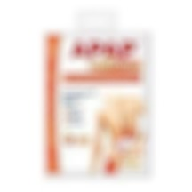
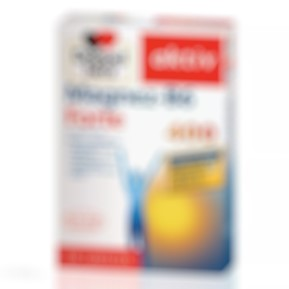

Liczba osób, które to lubią: 4224
Lubię to!- zdrowie, medycyna, nauka -
dzisiaj
ten tekst przeczytasz w 5 minut
– tabletkom, maściom i kolejkom do lekarza mówimy STOP!
Tabletki, maści i plastry przeciwbólowe oraz suplementy diety to jedne z najchętniej wykorzystywanych przez Polaków metod radzenia sobie z bólem, zwłaszcza w przypadku osób cierpiących na problemy ze stawami. Niestety, brutalna prawda jest taka, że korzystając z tych metod... prawdopodobnie szkodzisz sobie bardziej, i to na własne życzenie.
Z licznych badań przeprowadzonych w Europie wynika, że Polacy nadużywają środków przeciwbólowych w różnych formach – m.in. proszków, maści i plastrów. To bardzo niebezpieczne.
Przykładowe skutki uboczne środków do walki z bólem:
|  |  |  |
| Większość środków ogólnodostępnych w Polsce, za granicą można otrzymać tylko na receptę! | Szczególnie niezalecane do dłuższego stosowania, ponieważ mogą wywoływać alergie! | To substancje sztuczne, więc wchłaniają się tylko w niewielkim stopniu, w dodatku mogą kolidować z innymi lekami, np. na serce. |
|
|
|
Środki przeciwbólowe nie rozwiązują problemu – ukrywają go tylko na chwilę, w dodatku grożą efektami ubocznymi. Niestety, Polacy korzystają z nich chętnie, bo na wizytę u ortopedy trzeba czekać minimum pół roku! O państwowej rehabilitacji nie wspominając – w niektórych województwach można na nią czekać nawet 2 lata, a i to nie gwarantuje efektów. Wtedy pozostają już tylko operacje – jednak na nie czeka się najdłużej (nawet 3 lata), w dodatku wiążą się z długim okresem rekonwalescencji i zawsze pozostawiają ryzyko nieudanego zabiegu.
W obliczu takich wyzwań idealnym rozwiązaniem dla Polaków wydaje się być nowe rozwiązanie japońskiego profesora dr Nakagawy, który do kwestii zdrowia – podobnie jak cała medycyna wschodnia – podchodzi holistycznie, czyli kompleksowo. Jego rozwiązanie nie tylko nie powoduje skutków ubocznych, wprost przeciwnie – działa leczniczo również na inne organy w naszym ciele, zgodnie z zasadą „wszystko jest ze sobą połączone”.
Fot. Tradycyjna metoda leczenia, która liczy już 7000 lat, została wykorzystana przez dr Nakagawę do stworzenia nowoczesnego narzędzia do walki z bólem oraz przewlekłymi stanami chorobowymi kręgosłupa, kości i stawów w 100% naturalny sposób – od teraz dostępnego także w Europie.
Dr Nakagawa, twórca magnetoterapii oraz dyrektor szpitala Isuzu w Tokio, przedstawia nowatorską formułę likwidowania bólu stawów. Co więcej, metoda ta działa profilaktycznie w przypadku ponad 41 dolegliwości – od problemów z kręgosłupem i stawami (takich jak rwa kulszowa, artretyzm, reumatyzm), poprzez migrenę, urazy mechaniczne, aż do schorzeń wątroby i nerek.
„Do 30-dniowych testów klinicznych wybraliśmy przypadki przewlekłego bólu, na które już nic nie pomagało. W 80% przypadków ból znikał już po pierwszym dniu stosowania mojego rozwiązania. Po tygodniu 97% badanych przestało całkowicie odczuwać ból, bez względu na jego źródło. Obojętnie, czy narzekali na stawy kolanowe, wątrobę, nerki czy bóle pleców. To dlatego, że moja metoda wykorzystuje biostymulację komórek odpowiedzialnych za przewodzenie substancji odżywczych oraz impulsów nerwowych nie tylko w okolicy rdzenia kręgowego, lecz także innych organów w całym ciele”. – tłumaczy dr Nakagawa.
Fot. „Jeśli męczą Cię przewlekłe bóle stawów, kręgosłupa oraz inne dokuczliwe schorzenia, na które nic nie pomaga, powiedz STOP. Moja metoda pomogła już ponad 500 000 osób w Europie i Azji, to nie może być przypadek” – dr Nakagawa zachęca do wypróbowania swojej metody każdego w wieku od 16 do 90 lat i więcej.
Skuteczność metody potwierdzają inni badacze: dr Mark Valbona z Baylor Collage of Medicine zredukował bóle artretyczne u 76% badanych. Dr Eric Weintraub z New York Medical Collage zlikwidował palący ból stopy cukrzycowej w 90% przypadków.
Metoda japońskiego specjalisty rzuca wyzwanie dotychczasowym nieskutecznym i niebezpiecznym (leki, maści i plastry przeciwbólowe) lub kosztownym i czasochłonnym (kinezyterapia, masaże) sposobom na walkę z bólem kręgosłupa, kości i stawów.
Co więcej, jest przeznaczona zarówno dla osób, które chcą pozbyć się uporczywego bólu kręgosłupa, stawów kolanowych i biodrowych, jak i zaburzeń w funkcjonowaniu np. nerek czy wątroby! Pozwala na uwolnienie się od bólu, przy jednoczesnym zadbaniu o prawidłowe funkcjonowanie całego ciała. Właśnie na tym polega sekret medycyny chińskiej – praktykowanej z powodzeniem już od 7 tys. lat.
Spośród innych dostępnych na rynku metod, wyróżnia się szybkim i długofalowym wystąpieniem rezultatów oraz trwałą poprawą samopoczucia – bez inwazyjnych zabiegów oraz tym, że działa holistycznie, czyli wpływa pozytywnie na kondycję całego organizmu.
Metoda dr Nakagawy pozwala zaoszczędzić mnóstwo czasu i pieniędzy. W porównaniu do klasycznych metod – działa kompleksowo na cały organizm, nie tylko na kości i stawy. Pozwala zaoszczędzić setki godzin spędzonych na rehabilitacji i wizytach u lekarza.
„Jest w 100% naturalna, więc w przeciwieństwie do chemicznych tabletek - nie powoduje żadnych skutków ubocznych!”
Na rehabilitację państwową trzeba czekać kilka miesięcy, na zabiegi w sanatorium – nawet kilka lat. Prywatna fizjoterapia to koszt rzędu 2-10 tys. złotych rocznie, a leczenie operacyjne wiąże się z dużym ryzykiem i długim powrotem do zdrowia. Leczenie przeciwbólowe to tylko tuszowanie problemu, co więcej może prowadzić do uszkodzenia wątroby i żołądka. W przypadku tego rozwiązania jest inaczej. Pozwala na skuteczną i bezpieczną likwidację problemu we własnym zakresie, a jego cena jest nawet 10-krotnie niższa od innych rozwiązań. Jeden produkt wystarcza nawet na 50 lat!
Niewątpliwą zaletą metody jest to, że nie wymaga wychodzenia z domu i opłacania kolejnych wizyt. Forma produktu daje możliwość profilaktyki w dogodnym momencie i miejscu: w domu, w drodze do pracy, nawet podczas niedzielnego spaceru.
Fot. Metoda dr Nakagawy szczególnie polecana jest w przypadku leczenia przewlekłego bólu kręgosłupa, kości i stawów, jednak doskonale sprawdzi się również w przypadku zaburzeń funkcjonowania organów takich jak żołądek, wątroba czy nerki. Jak to możliwe? Wszystko dzięki wykorzystaniu 7 tys. lat osiągnięć medycyny chińskiej, w tym elementów akupresury, w połączeniu z nowoczesnymi technologami, m.in. biostymulacji i biomagnetoterapii.
„Bóle kręgosłupa doskwierały mi od wczesnej młodości. Chodziłam po lekarzach, dostawałam skierowania do fizjoterapeutów, masażystów i innych cudotwórców. Łykałam proszki, chodziłam na basen, stosowałam obuwie korygujące. I co? Kompletnie żadnych efektów! 35 lat się z tym męczyłam! Gdyby nie rozwiązanie dr Nakagawy, pewnie już by mi tak zostało. Połamana, pokrzywiona... Ale to rozwiązanie zadziałało fenomenalnie. Po trzech dniach poczułam ulgę. Po kolejnych pięciu, ból w zasadzie ustąpił. Nie pamiętam już życia sprzed bólu, tak dawno to było. Czuję, jakbym się urodziła na nowo.”
– Ewa Bąk (72 l.) z Ełku
PS. Dla czytelników medipresse.pl pod tym linkiem czeka oferta specjalna:
70% zniżki + przesyłka GRATIS [tylko dzisiaj]
Komentarze
Czytasz komentarze do artykułu: „Powiedz STOP kolejkom, tabletkom i maściom”